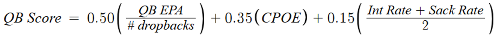

Predicting Best Play Calls
Methodology
The modeling phase of this project began with a fundamental decision about how to structure predictions across NFL formation and play type combinations. Rather than building a single unified model that would treat all plays identically, I trained separate models for each of four formation-play type combinations: Shotgun Pass, Shotgun Run, Under Center Pass, and Under Center Run. This decision reflected a core insight from the exploratory phase that EPA distributions in different situations differ fundamentally enough that pooling them into one model as variables wouldn’t predict play efficiency as accurately.
I used the same dataset as the descriptive logistic regression and decision tree models and created a new column, constructed by crossing the shotgun indicator with the play type variable, to describe which of the four formation-play categories was used. After filtering into four separate datasets for each formation and play type, the training period covering 2016 through 2023 contained 269,903 plays distributed across the four categories, with Shotgun Pass representing the largest group at 129,806 plays, followed by Under Center Run at 62,005, Shotgun Run at 42,361 after a critical data cleaning step described below, and Under Center Pass at 29,127.
When deciding between using Random Forest and XGBoost models, XGBoost produced negligible performance differences relative to the Random Forest baseline. Testing XGBoost with optimized hyperparameters derived from five-fold cross-validation on the Shotgun Pass training data revealed MSE improvements of 0.19 percent on Shotgun Pass and 1.40 percent on Under Center Run, while Random Forest actually outperformed XGBoost on Shotgun Run and Under Center Pass by 0.37 and 0.29 percent respectively. These marginal and directionally inconsistent differences indicated that algorithm choice was not the limiting factor in predictive accuracy. The main factor was the inherent unpredictability of play-level NFL outcomes and the absence of execution-level variables from the feature set, limitations that no single model can overcome from situational data alone.
Random Forest was used for all four EPA models on the grounds that introducing a second algorithm added unnecessary complexity without meaningful accuracy gains, and that the consistent cross-model performance of Random Forest better suited the interpretability requirements of a coaching decision-support application. I used the same features from the descriptive models: down, yards to go, yardline from the opponent’s end zone, score differential, seconds remaining in the half, and quarter.
Scramble Contamination Problem
One of the most important data integrity decisions in the project emerged from investigation of why the Shotgun Run model was systematically overvaluing run plays from shotgun in long distance situations. Initial distributions showed Shotgun Run performing suspiciously well in scenarios where conventional football wisdom strongly favors passing, and my first instinct was to look for scrambles.
Quarterback scrambles were being classified as run plays in the raw data, and they were concentrated heavily in the Shotgun Run category. Among all run plays in the 2016-2023 training window, 5.71 percent were scrambles. Breaking scrambles down by formation revealed that 11.3 percent of Shotgun Run plays were scrambles, compared to only 1.9 percent of Under Center Run plays. More significantly, scrambles generated a mean EPA of +0.466, compared to -0.051 for designed Shotgun Runs and -0.090 for Under Center Runs. The practical consequence was stark: scrambles were inflating the Shotgun Run mean EPA from -0.051 to +0.008, meaning the entire positive signal for Shotgun Run in the training data was attributable to scramble behavior rather than designed run concepts.
This contamination was particularly damaging for the model’s behavior in long distance situations because scrambles occur disproportionately on passing downs when the pocket collapses, the exact situations where the original model was most confidently and incorrectly recommending Shotgun Run. The decision to remove scrambles entirely from both run datasets was made after reviewing this evidence, reducing the Shotgun Run training set from approximately 47,764 to 42,361 plays. The Under Center Run set dropped from 63,205 to 62,005 plays, a much smaller reduction consistent with scrambles’ minimal presence in under center situations. Following this cleaning step, Shotgun Run mean EPA in training fell to -0.051, a more defensible figure that reflected the actual performance of designed run concepts from shotgun.
QB Quality Score Construction
A significant methodological refinement involved incorporating quarterback quality as a model feature. The initial six-variable feature set treated all quarterbacks identically, meaning a Tom Brady play call and a backup quarterback play call were indistinguishable to the model despite their obviously different expected outcomes. Addressing this required constructing a composite quarterback quality metric that was scheme-neutral, temporally valid, and practically joinable to the training data.
The QB quality score was built from three components. The first was mean QB EPA per dropback, the broadest signal of value generation that captures how much expected points a quarterback adds relative to what any quarterback would produce in the same situations. The second was mean CPOE, or completion percentage over expected, which represents the purest individual skill metric available in nflfastR. It adjusts for receiver depth, coverage difficulty, and game situation, isolating the quarterback’s contribution to completion probability above expectation. The third was a pressure metric constructed as the average of sack rate and interception rate, both sign-flipped so that lower turnover rates produce higher scores, capturing ball security and pocket decision-making as a dimension independent from the value generation and accuracy components.

Early iterations of the composite included yards per attempt and scramble rate as additional components. Yards per attempt was removed on the grounds that it reintroduces the volume problem the composite metric was designed to avoid. For example, a quarterback on a trailing team accumulates passing yards partly through game script rather than individual skill. Scramble rate was removed after implementation produced identical scramble scores across all non-mobile quarterbacks. Because scrambles were removed from the dataset, I decided to keep the combination of QB EPA, CPOE, and pressure, which together captured value generation, accuracy, and ball security as a sufficiently comprehensive representation of quarterback quality. The composite was calculated by standardizing each component across the full population of qualifying quarterbacks with at least 100 dropbacks and 8 games played in a season. The games played threshold was added specifically to exclude injury-shortened seasons that would otherwise introduce unreliable small-sample estimates and weighting them 0.50 for QB EPA, 0.35 for CPOE, and 0.15 for the pressure metric. This weighting hierarchy was intended to reflect that QB EPA is the most comprehensive signal, CPOE is the purest skill measure, and ball security metrics capture a real but secondary dimension of quarterback value.
Tier boundaries were set using percentile analysis of the resulting distribution. Examining the 50th, 75th, and 90th percentiles of the qb_quality_score distribution produced cutoffs of 0.095, 0.583, and 1.034 respectively. After inspecting the quarterbacks and seasons falling near these thresholds, tier boundaries were set at 1.00 for Elite, 0.50 for Above Average, 0.00 for Average, -0.75 for Below Average, and Replacement Level below that. These thresholds were validated by checking that the Elite tier captured historically exceptional seasons: Rodgers 2020, Ryan 2016, Brees 2018, Brady 2016, Allen 2020, Mahomes 2018, Brees 2019, and Jackson 2019 at the top of the distribution.
The composite was lagged by one season before joining to the play-by-play data, meaning 2019 plays received a quarterback’s 2018 quality score. This temporal structure was adopted to prevent data leakage because using current-season QB quality to predict current-season EPA on individual plays would create circular prediction, despite the acknowledged limitation that it misrepresents quarterbacks in breakout or falloff years. Lamar Jackson’s 2019 plays, for instance, receive his modest 2018 rating rather than his MVP-caliber 2019 performance.
Missing QB quality scores for rookies were addressed by giving a score of 0, representing league average. This decision overrode an initial calculation showing the empirical average rookie quality score was approximately -0.70, a figure rejected as artificially lowered by poor supporting casts rather than genuine quarterback quality. Backup quarterbacks, defined as those who never accumulated 100 dropbacks and 8 games played across their entire career, received an imputed score of -0.20, a slight negative adjustment reflecting the selection process by which career backups reached that status.
Yards-Based Simulation Architecture
Initial model iterations predicted EPA directly and used separate Random Forest classification models to estimate conversion probability as a binary outcome. This structure was problematic as the conversion models were learning directly from the binary first down outcome variable rather than from the continuous yards gained distribution, meaning the conversion probability estimates weren’t paired with the yards-gained simulations that would most naturally produce them.
The resolution was to unify the simulation around yards gained as the primary outcome. Four Random Forest models using yards-gained as the response variable were trained in parallel with the four EPA models, using identical feature sets. I then created a simulation function, inputting values for each variable to describe a game situation. The function would then produce a prediction with the yards-gained model. 10,000 residuals were sampled from the training residual pool and added to that prediction to produce a distribution of 10,000 simulated play outcomes, and conversion probability was calculated as the proportion of simulated outcomes exceeding the yards needed for a first down. EPA predictions from the parallel EPA models were used to rank formation-play options by expected value, while yards-based conversion probabilities were used for situation-specific adjustments in critical down scenarios.
Rather than predicting conversion probability as a simple yes or no, the system produces it as a direct consequence of simulated yardage distributions that coaches can understand intuitively. A 52 percent conversion probability on a Shotgun Pass play means that in 5,200 of 10,000 simulated plays from that situation, the simulated yards gained exceeded the yards needed. I also wanted to quantify upside and downside risks, so I added “Boom” and “Bust” percentages, measuring the proportion of simulations producing explosive plays (EPA > 1.5) and disaster scenarios (EPA < -1.5), providing coaches with risk-reward profiles beyond simple averages. The residual pool approach preserved the actual outcome distribution from training data including fat positive tails from touchdown plays and negative tails from sacks and turnovers which parametric approaches assuming normality would have underrepresented.
Hyperparameter Configuration
Random Forest hyperparameters were set to balance predictive accuracy against computational feasibility across eight models requiring frequent retraining. RMSE was prioritized over R² for optimization as it is well documented that the unpredictability of play-by-play data produces low R2 values. Also, another benefit of RMSE is that it measures average prediction error in units of the response variable, allowing direct assessment of whether model refinements reduced errors by meaningful amounts (e.g., 0.1 EPA per play) rather than abstract variance percentages. The number of trees was set to 200 for all models, a value chosen after observing that RMSE improvements plateaued beyond 200 trees while training time more than doubled moving from 200 to 500 trees. Node size was set at 100 for the EPA models and varied between 50 and 100 for the yards models based on sample size. Maximum nodes was set at 50, a constraint preventing individual trees from becoming excessively deep and overfitting. Sample size per tree was set proportionally to each formation’s training data volume: 50,000 for Shotgun Pass, 30,000 for Shotgun Run, 25,000 for Under Center Pass, and 40,000 for Under Center Run. The mtry parameter was set at 3 for initial models and subsequently increased to 4 during a retraining cycle intended to improve accuracy, though the accuracy gains from this adjustment were modest.
Reliability-Weighted Recommendation
A critical limitation of the four-model Random Forest architecture became apparent during systematic evaluation: the models produced predictions in situations where the underlying training data was insufficient to support reliable estimates. This manifested most consequentially in the Shotgun Run model’s behavior on third and medium distance plays, where the model consistently recommended Shotgun Run over Shotgun Pass despite the logical implausibility of that recommendation and its contradiction of observed test set outcomes.
After looking deeper these predictions came as a result of large differences in sample sizes for play types in certain down and distance scenarios. On third and medium plays in the training data, Shotgun Pass appeared 15,388 times while Shotgun Run appeared only 870 times. Naturally, the thousands of extra plays mean thousands of incompletions which classify as negative EPA, thus lowering the mean EPA of Shotgun Pass plays. This discovery motivated the construction of a reliability lookup table that classified each situation-formation cell by training sample size. These cells were segmented by formation-play types, down, and distance. Distance was categorized as short being 0-3 yards, medium 4-6 yards, long 7-10 yards, and very long as 10 plus yards. Examining the distribution of sample sizes across all 64 situation-formation cells revealed a natural threshold for reliable plays. At a 500 play minimum, 40 of 64 cells qualified as reliable, representing 63.5% of the total situation space. At 200 plays, 50 cells qualified. At 2,000 plays, only 23 cells qualified. Many of the cells with under 300 plays were run plays on long and very long distance situations, so most of the most influential down and distance scenarios had sufficient plays to predict reliably.
The decision to use a three-tier reliability system rather than a binary threshold reflected a practical judgment about how to handle the ambiguous middle ground. I identified High reliability cells when their training sample size met or exceeded the minimum number of observations required to detect a 0.05 EPA or a 0.5 yard difference from the true mean with 90 percent confidence using a standard statistical z-score calculation. This was calculated as the square of 1.645, the z-score corresponding to the 90 percent confidence level, multiplied by the cell’s own EPA standard deviation and divided by the desired margin of error(0.05), ensuring that the reliability threshold was calibrated to each cell’s actual outcome variance rather than applied as a uniform cutoff across all situations. Cells from 500 plays to the calculated threshold for High were designated as Moderate, and cells with 200 to 499 plays received Low reliability designation, indicating directionally useful but statistically uncertain estimates. Any cell below 200 was classified as Insufficient and excluded from ranking entirely. This tiering system produced 29 High cells, 11 Moderate cells, 10 Low cells, and 14 Insufficient cells. Insufficient cells included both runs and passes from Under Center on 3rd and Long, Very Long, 4th and Medium, Long, and Very Long, and Shotgun Run on 4th and Medium, Long, and Very Long. The impact of losing these cells are relatively minimal because it is standard knowledge that shotgun passes give a team a best shot of converting on a 3rd or 4th down from long distance.
The reliability lookup was integrated into the recommendation function through a modified ranking procedure. Formation-play options classified as Insufficient were excluded from the recommendation ranking entirely. Options with Low or Moderate reliability generated explicit warnings in the recommendation output, surfacing sample size information alongside EPA and conversion probability metrics. This transparency mechanism allowed the system to communicate uncertainty honestly rather than ignoring data limitations with false precision.
Situational Recommendation Logic
The recommendation function combined the simulation outputs, reliability classifications, and situation-specific logic into a unified decision framework. The function accepted seven inputs, the values for each variable in the model: down, yards to go, yardline, score differential, seconds remaining in half, quarter, and QB quality score. It then plugged all those values into the simulation and returned a ranked recommendation with supporting statistics.
The classification of each query into its situational context began with distance category assignment: Short for one to three yards needed, Medium for four to seven, Long for eight to ten, and Very Long for eleven or more. A two-minute drill flag was triggered when seconds remaining in the half fell below 120. Field zone classification segmented the field into Goal Line within the opponent’s three yard line, Red Zone within twenty yards, Opponent Territory within forty yards, Own Territory beyond sixty yards, Own Goal Line within the offense’s five yard line, and Midfield for the central portion of the field.
The ranking procedure first retrieved reliability information for the queried down and distance bucket, identified which formation-play options had sufficient training data, and excluded Insufficient options from consideration. The remaining options were ranked by mean simulated EPA from the simulation. An ambiguity check compared the 90 percent confidence intervals of the top two ranked options, flagging situations where the intervals overlapped as statistically indistinguishable, cases where the recommendation system acknowledged uncertainty rather than providing a falsely precise ordering.
To make the recommendation function accessible beyond a coding environment, I created an interactive Shiny application using the shinydashboard framework. The app accepts the same seven situational inputs as the recommendation function through dropdown menus and numeric fields, with quarterback quality transformed to categorical tiers rather than a raw numeric score. The QB quality score was used in the models as a continuous feature rather than a categorical tier to avoid collapsing a valuable variable into categories and discarding information. However, the Shiny application interface uses QB tier as an input through a five-tier dropdown that maps to representative numeric scores valued as an average of the respective tier: Elite mapping to 1.40, Above Average to 0.72, Average to 0.13, Below Average to -0.36, and Replacement Level to -1.20. This design preserved model continuity while providing a user-friendly input mechanism for coaches and analysts who think about quarterback quality in categorical terms.
How the Simulation Works
The app runs the full simulation and returns the complete output within approximately two to three seconds. The interface provides primary and backup formation-play recommendations with a second page for reliability warnings that flag insufficient or low-confidence situations, a ranked summary table showing mean EPA, conversion probability, boom percentage, and bust percentage for all four options, and four supporting visualizations displaying the simulated EPA distributions, mean EPA with 90 percent confidence intervals, conversion probabilities, and training sample sizes color-coded by reliability tier. All eight Random Forest models, residual pools, reliability lookup table, and helper functions were saved to the app’s models folder using R’s native RDS and RData formats and loaded once when the app launches, meaning the models only need to be trained once and the app can be run independently of the original training script.